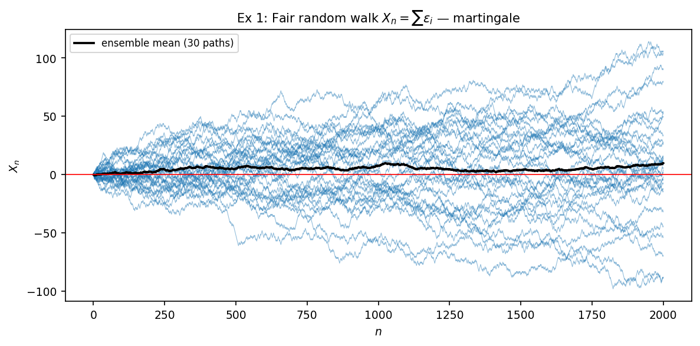
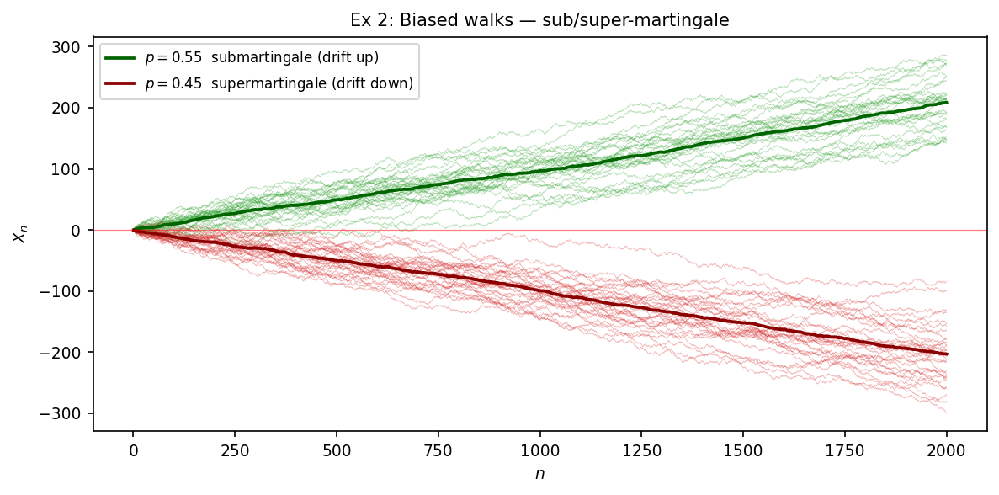
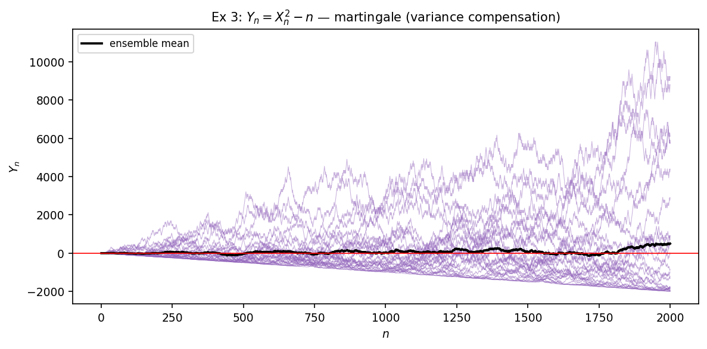
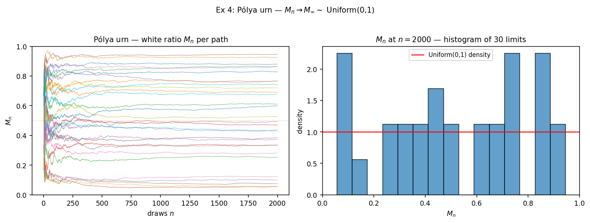

연구 ▷ HST ▷ 마팅게일이란 무엇인가 — 시뮬 6예제로 보는 강의노트
마팅게일은 “평균적으로 공정한 게임” 의 수학적 추상이다. 정확하게는 — 적분가능한 process \(\{X_n\}_{n \geq 0}\) 이 filtration \(\{\mathcal F_n\}\) 에 적응 되어 있고 (\(X_n \in \mathcal F_n\), \(E|X_n| < \infty\)) 각 step 의 조건부 평균이 현재 값과 같을 때, 즉
\[E[X_{n+1} \mid \mathcal F_n] = X_n\]
를 만족할 때 \(\{X_n\}\) 을 \(\mathcal F_n\)-마팅게일 이라 부른다. 부등호 \(\geq\) 면 submartingale, \(\leq\) 면 supermartingale. 정의를 처음 보면 추상적인데, 시뮬로 한두 path 만 그려보면 “무엇이 마팅게일인지” 가 즉각 와닿는다. 본 글은 6개 예제로 그 직관을 짚어본다 (시뮬 코드: 260522_리이_마팅게일이무엇인지시뮬.py).
가장 단순한 예부터 시작한다. 예제 1 — fair random walk. \(\epsilon_1, \epsilon_2, \dots\) 가 \(\pm 1\) fair coin i.i.d. 이고 \(X_n := \sum_{i=1}^n \epsilon_i\) 라 하자. natural filtration \(\mathcal F_n := \sigma(\epsilon_1, \dots, \epsilon_n)\) 에 대해
\[E[X_{n+1} \mid \mathcal F_n] = X_n + E[\epsilon_{n+1}] = X_n + 0 = X_n\]
이므로 마팅게일. 시뮬에서 30 paths 의 평균 (굵은 검정선) 이 시간이 흘러도 0 근처에 머무는 게 마팅게일의 본질 — path 하나하나는 진동하지만 ensemble 평균은 stationary. 이게 “공정” 의 정량적 의미다.
다음 예제 2 — 편향된 walk. \(\epsilon_i = +1\) (확률 \(p\)) / \(-1\) (확률 \(1-p\)). \(E[\epsilon] = 2p - 1\). \(p = 0.55\) 이면 \(E[\epsilon] = +0.10\) 이고 \(E[X_{n+1} \mid \mathcal F_n] = X_n + 0.10 > X_n\) — 평균이 위로 흐른다. 이런 경우를 submartingale 이라 부른다. 반대로 \(p = 0.45\) 면 supermartingale (평균이 아래로). 시뮬 가운데 panel 의 두 ensemble 평균이 ±0.10 의 기울기로 갈라지는 것이 그것이다. 마팅게일은 양옆 사이의 균형점 — drift 가 정확히 0 인 한 줄. Submartingale 과 supermartingale 사이의 경계 case 가 마팅게일이라는 사실은 두고두고 쓰인다.
세 번째는 예제 3 — variance compensation trick. 같은 fair walk 의 제곱 \(X_n^2\) 은 시간에 따라 자라기 때문에 마팅게일이 아니다. 그런데 \(n\) 만큼 빼주면 — 즉 \(Y_n := X_n^2 - n\) — 마팅게일이 된다. 한 줄 계산:
\[ \begin{aligned} E[X_{n+1}^2 \mid \mathcal F_n] &= E[(X_n + \epsilon_{n+1})^2 \mid \mathcal F_n] \\ &= X_n^2 + 2 X_n\, \underbrace{E[\epsilon_{n+1}]}_{=\, 0} + \underbrace{E[\epsilon_{n+1}^2]}_{=\, 1} \\ &= X_n^2 + 1. \end{aligned} \]
\(\Rightarrow E[Y_{n+1} \mid \mathcal F_n] = (X_n^2 + 1) - (n+1) = X_n^2 - n = Y_n\). 이게 “\(X_n^2\) 의 자연스러운 자람 \(n\) 을 빼주면 마팅게일이 남는다” 는 핵심 trick. 시뮬에서도 평균이 0 근처에 머무는 게 확인된다. 이 trick 의 일반화가 Doob-Meyer 분해 (submartingale = martingale + predictable increasing) 인데, HST 분석의 핵심 도구이기도 하다.
여기까지가 random walk 한 줄에서 뽑은 세 가지 표정. 시뮬은 한 figure 에 모았다:

다음은 흔히 “마팅게일 컨버전스” 의 교과서 예시로 등장하는 예제 4 — Pólya urn. 항아리에 흰 공 1개, 검은 공 1개로 시작. 매 step 무작위로 한 공을 뽑아 같은 색을 한 개 더 넣는다. 흰 공 비율을 \(M_n := W_n / (W_n + B_n)\) 으로 두면 \(M_n\) 이 \([0, 1]\) 위 마팅게일이다. 한 줄 검증 — 현재 흰 공 비율이 \(M_n\) 이면 다음 추첨에서 흰을 뽑을 확률이 \(M_n\), 그 다음 비율이 \((W_n + 1)/(N_n + 1)\), 검을 뽑을 확률이 \(1 - M_n\), 그 다음 비율이 \(W_n / (N_n + 1)\) (\(N_n := W_n + B_n\)). 따라서
\[E[M_{n+1} \mid \mathcal F_n] = M_n \cdot \frac{W_n + 1}{N_n + 1} + (1 - M_n) \cdot \frac{W_n}{N_n + 1} = \frac{M_n N_n + M_n}{N_n + 1} = M_n.\]
마팅게일이고, 값 자체가 \([0, 1]\) 에 갇혀 있으니 uniformly bounded. Doob 의 마팅게일 수렴 정리 (Durrett Thm 4.2.10) 에 의해 \(M_n \to M_\infty\) a.s. 가 어떤 random 극한으로 수렴한다. 흥미로운 점은 이 \(M_\infty\) 가 결정론적 상수가 아니라 Uniform(0,1) 분포를 갖는 random variable 이라는 사실 — 시뮬에서 30 paths 각각이 자기만의 limit 으로 떨어지고, 마지막 시점의 histogram 이 uniform 모양을 보인다.

이 예제는 “마팅게일이 수렴한다고 해서 그 극한이 결정론적이라는 뜻은 아니다” 를 보여주는 표준 카운터-직관 사례다. 마팅게일 수렴은 ensemble 의 평균이 stationary 라는 것 뿐, 개별 path 의 운명은 path-dependent.
예제 5 — Doubling (gambler’s strategy). \(\epsilon_i = \pm 1\) fair, 매 step 베팅 \(a_n\) 을 결정하되 직전 결과만 본다 — predictable 베팅. 잃으면 베팅을 2배, 이기면 1로 reset. 누적 손익 \(X_n := \sum a_i \epsilon_i\). predictable 베팅 \(a_i\) 의 곱은 마팅게일의 transform 을 만들고 (Durrett Thm 4.2.8), 따라서 \(X_n\) 자체가 마팅게일 — 평균은 0. 시뮬 왼쪽 panel 의 path 들이 0 근처에서 진동한다. 하지만 베팅 자체는 — 오른쪽 panel — log scale 로 그려야 보일 정도로 폭발한다. 이게 마틴게일 도박법 의 핵심 — 평균적으로는 공정하지만 한 path 의 베팅 분산이 무한 하다. 실제 도박장에서 이 전략이 무너지는 이유는 유한한 자본 때문이지 마팅게일 성질 때문이 아니다.

마지막 예제 6 — Galton-Watson branching. 한 generation 의 인구 \(Z_n\) 이 다음 generation 에서
\[Z_{n+1} = \sum_{i=1}^{Z_n} \xi_i, \quad \xi_i \overset{\text{iid}}{\sim} \text{Poisson}(m)\]
으로 자란다 (각 개체가 평균 \(m\) 명의 자식). \(m\) 이 평균 자손 수. \(Z_n\) 자체는 보통 마팅게일이 아니지만 (\(m \neq 1\) 이면 평균이 \(m^n\) 으로 자람), 정규화 \(M_n := Z_n / m^n\) 이 마팅게일이다. 한 줄: \(E[Z_{n+1} \mid \mathcal F_n] = m \cdot Z_n \Rightarrow E[M_{n+1} \mid \mathcal F_n] = E[Z_{n+1}]/m^{n+1} = Z_n/m^n = M_n\). 시뮬은 \(m = 0.7\) (subcritical), \(m = 1\) (critical), \(m = 1.3\) (supercritical) 세 regime 을 비교한다. 위 행은 raw \(Z_n\) 의 폭발/멸종 거동, 아래 행은 정규화 \(M_n = Z_n/m^n\) 의 마팅게일 거동.

세 regime 의 거동은 마팅게일 수렴의 세 얼굴 을 보여준다. Subcritical (\(m = 0.7\)) 에서는 인구가 빠르게 멸종 (\(Z_n = 0\)) 으로 가는데 \(1/m^n\) 가 폭발해서 \(M_n\) 도 결국 0 으로 갈지 어떤 finite limit 으로 갈지가 path 별로 달라진다. Critical (\(m = 1\)) 에서는 \(M_n = Z_n\) 자체 — 확률 1로 인구가 멸종하지만 그 과정이 매우 느려서 평균은 1을 유지한다 (마팅게일 보존). Supercritical (\(m = 1.3\)) 에서는 인구가 폭발하거나 (이 경우 \(M_n\) 이 어떤 finite random limit 으로 수렴) 멸종 (이 경우 \(M_n \to 0\)). 양쪽 결과의 확률이 멸종 확률 이라는 그 자체로 유명한 양이다 — 그게 결국 마팅게일 평균 1 = 멸종확률 \(\cdot 0\) + 생존 path 의 평균 limit, 으로 식이 닫힌다.
여섯 예제를 한 줄로 묶으면 — 마팅게일은 결정론적 stationary 가 아니라 ensemble-평균 stationary. 개별 path 는 자유롭게 진동하거나 폭발하거나 random limit 을 가질 수 있지만, 매 step 의 조건부 평균 변동 이 정확히 0 이라는 그 한 조건이 모든 path 를 한 쇠줄로 묶고 있다. 이게 마팅게일이 (1) 도박, (2) 인구 동력학, (3) 강화학습, (4) 금융, (5) HST 의 height 잔차 등 어디서나 자연스럽게 튀어나오는 이유다. “평균이 변하지 않는다” 라는 가장 약한 통제만으로도 정리의 칼날이 살아남는다.
마팅게일이 살아남으면 어떤 일이 일어나는가 — 즉 SLLN, CLT, optional stopping, concentration 등 — 은 다른 글의 주제 (예: 260522_f2fd96.html Durrett 4.5.3 책공부 + HST Theorem C 적용 글).
시뮬 raw 데이터는 results/numeric/260522_리이_마팅게일이무엇인지시뮬.py/raw.npz, 코드는 260522_리이_마팅게일이무엇인지시뮬.py (회사 루트). 6 예제 모두 random seed 20260522, 30 paths (예제 5·6 은 20 paths), \(T = 2000\) (예제 5 는 \(T=500\), 예제 6 은 \(T=25\) generation).